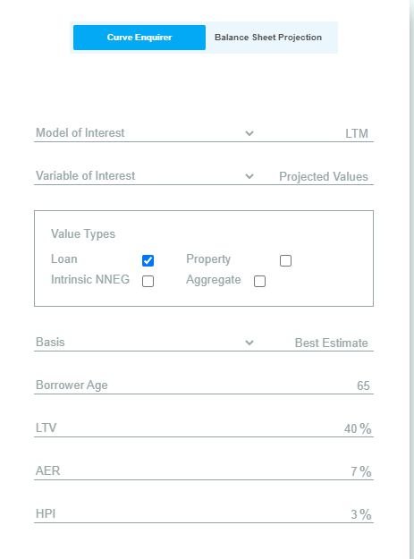
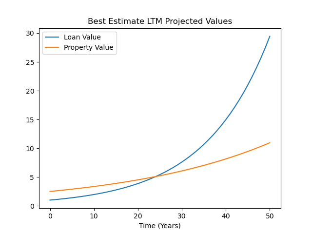
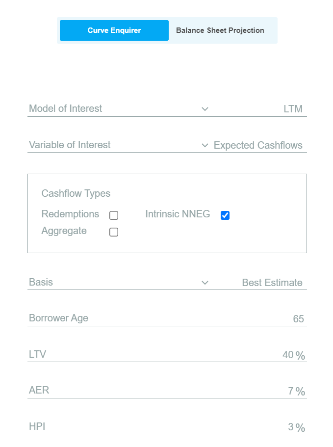

LTMs
Foreword to the Curve Enquirer
The curve enquirer is a tool which allows users to investigate some of the values produced and used by the main balance sheet projection model. It makes various simplifying assumptions, including that:
- projections are run with steps of one year;
- all annuity policies pay amount 1 per annum in arrears; and
- all LTM policies have initial loan amount of 1
What Is An LTM?
An Lifetime Mortgage (LTM) is a product which allows individuals to borrow money, using their property as collateral whilst still retaining ownership of the property. An LTM differs from a commercial mortgage in that, rather than gradually paying off the loan over time, the borrower has the option to repay the loan only once they have died (or entered into long-term care) using the proceeds from the sale of their property at this time.
The borrower will also have the option to voluntarily repay their loan balance early (known as a voluntary redemption). However, doing so may carry a penalty known as an early redemption charge).
What is a NNEG on an LTM?
If the value of the property exceeds the value of the loan at the time it is redeemed, then it is common for the borrower's other assets to be ring-fenced so that the amount repaid is capped at the value of the property. This cap is commonly referred to as a No-Negative Equity Guarantee (NNEG).
Expected Cashflows
The expected cashflow from an LTM at each future point in time are influenced by various factors including (but not limited to):
- Decrement probabilities
- LTV
- HPI assumption
Projecting Expected Redemption Cashflows
Suppose we have a borrower aged 65 and that the only possible decrement is death (i.e. we are ignoring the possibility of a voluntary early redemption).
The probability that the loan is redeemed in each of the next 50 years can be inspected by populating the curve enquirer with the following inputs:
This will give the following result:
Note that the above graph peaks at around the 20th year of the loan term, so this is the time at which redemptions are most likely.
We can also use the curve enquirer to see the accumulated loan balance at each future point in time (assuming an AER of 7% is applicable to the loan) by using the following inputs:
The output of this run should look as follows:
The expected redemption cashflows of the LTM for each year is then equal to the probability that the loan is redeemed in that year (as shown in the first of the two graphs above) multiplied by the loan balance at that point in time (shown in the second of the two graphs above). We can view the profile of the expected redemption cashflows using the curve enquirer by using the following inputs:
This gives the following result:
Projecting Intrinsic NNEG Cashflows
Recall, from above, that LTMs typically have an embedded guarantee (known as the no-negative equity guarantee, or "NNEG") which means that the amount repaid cannot exceed the value of the borrower's property at the time that the loan is redeemed. If the loan is redeemed at an earlier point in time then it is unlikely that the value of the loan will exceed the value of the property (in which case the NNEG is said to "bite"). However, if house price inflation (HPI) is less than the rate at which the loan balance rolls-up then it is possible that the NNEG will bite at later times.
Assuming a rate of HPI of 3% and an LTV of 40%, we can use the curve enquirer to plot the accumulated loan value and the projected property value over time using the following inputs:
This gives the result
We can see from the above that, under our chosen assumption for HPI, the value of the loan will exceed the value of the borrower's property after approximately 24 years. Thus, if the loan was redeemed before this point then the intrinsic NNEG would be zero and after this point the intrinsic NNEG would gradually increase. We can see the profile of the intrinsic NNEG using the curve enquirer using the following setup:

As expected, this is zero for approximately 24 years and then increases exponentially beyond this point:

We can then multiply the projected value of the intrinsic NNEG at each year by the probability of the loan being redeemed in that year to obtain the expected intrinsic NNEG cashflows. Using the curve enquirer with the setup
We see that this looks as follows:
The expected LTM cashflows net of intrinsic NNEG are thus the expected redemption cashflows minus the expected intrinsic NNEG cashflows. We can plot all of these curves on the same graph using the curve equirer (by copying the above set-up, but also checking "redemptions" and "aggregate"):
We can see that this has had the effect of reducing the expected LTM cashflow at durations past the 24 year mark.